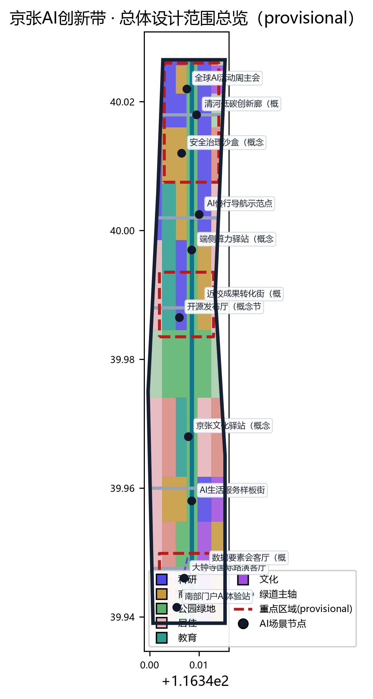
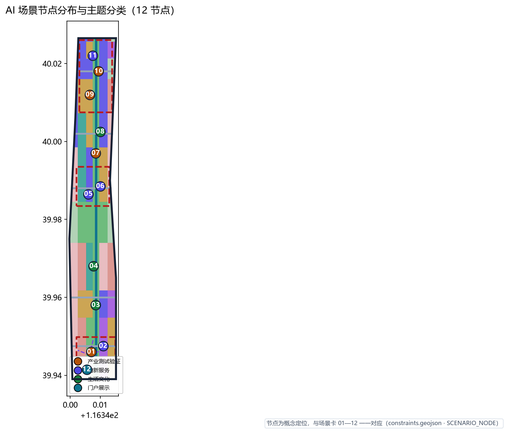
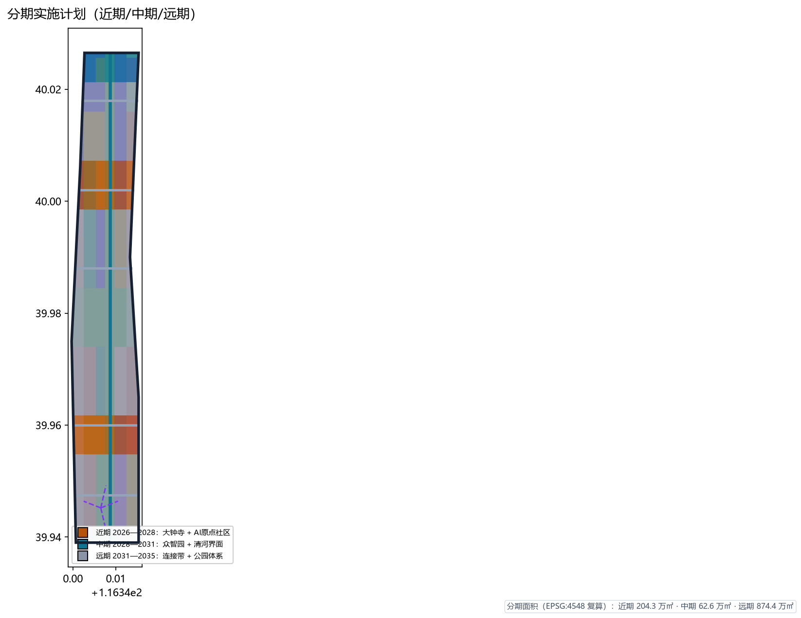

统筹研究范围 · 43.6 km²
AI 产业生态、三区两翼协同、未来城市形态与品牌叙事。
- 三大定位：百年京张文化带/都市AI生活体验带/AI融合创新带
- 五大功能协同回路
- 6 个全球 AI 创新生态案例转译
离线电子展示成果（visual/index.html）。权威数据仍以 geometry/*.geojson、metrics.json、sources.json、assumptions.json、三张矩阵与 self_check.json 为准；本页将总览地图、三层范围、重点区域、用地分区、交通慢行、蓝绿公共空间、建筑与更新项目、AI 场景、核心指标、任务覆盖、自检状态、来源与假设转成人类可读的展示板。全部空间结论基于 provisional 边界，仅为概念建议。
总览地图将用地分区、交通慢行、蓝绿公共空间、重点区域与 AI 场景节点放在同一张证据图中，便于评审快速理解「一带三核两翼多点」的空间主线。

方案按统筹研究范围、总体设计范围、重点区域范围递进，把产业判断、城市更新和重点片区设计绑定到图层与指标。
AI 产业生态、三区两翼协同、未来城市形态与品牌叙事。
控规深度城市设计：用地结构、更新框架、交通市政、京张遗址公园活力带。
三处重点片区详细设计：功能业态、建筑更新、公共空间与交通组织。
三处重点区均给出定位、空间动作、建筑更新、交通慢行、公共空间、AI 场景与实施风险（方向性设计，provisional 多边形）。
花园型全栈自主创新街区：科研 0802 为主 + 产业展示 0803，清河界面防护绿带，低碳创新廊与安全治理沙盒，北五环/清河对外接口。
近校型成果转化与人才社区：校区-园区-街区慢行缝合，开源发布厅、成果转化街、人才特区服务，遗址公园节点贯通。
城市型智能经济与国际交往街区：大钟寺站城一体化（概念）、国际路演客厅、数据要素会客厅、路口四象限步行连通。
29 个用地要素按国土空间分类代码组织，完整覆盖提交边界、无重叠无缝隙；面积在 EPSG:4548 下复算。
绿道主轴 + 横向联络 + 站城接驳：约 17.07 km 道路中心线网络（EPSG:4548）。
一脊两翼多节点：京张遗址公园活力带为脊，清河/小月河为两翼，8 处公共活动节点。
12 张场景卡（含 4 张产业测试验证场景★），每张均说明空间落位、服务对象与自检边界。
原点社区：成果发布、代码贡献展示、小型路演。
众智园：标准制定、安全评测、模型红队测试展示与预约节点。
中部连接带：新型基础设施原型。
遗址公园带：可解释导视、慢行断点识别。
大钟寺：展示、洽谈、媒体发布与国际交流。
众智园清河界面：绿色空间、雨洪、骑行与AI展示。
原点社区：孵化、展示、法务、知识产权与投融资服务。
大钟寺：合规、授权、可审计的数据要素城市服务界面。
南段社区：医疗、教育、法律、生活服务小尺度街区。
一带公共空间：可步行、可传播的体验路线。
遗址公园：铁路文脉、中关村文化与AI新文化叙事。
大钟寺站南：智能终端与内容消费体验入口。
场景地图把 12 个 AI 场景节点按主题分类落位；分期图表达近期/中期/远期实施范围（概念，与 phasing.geojson 一致）。


The AI Line 品牌方向（1909—AI 双时间线 · 三色体系 · 延展应用）与 2035/2050 双阶段愿景（概念展望）。
compliance_matrix.json 覆盖公告 1.3、1.4、1.5 全部任务与 agent.1—agent.6；standard_matrix.json 覆盖五份强制专业标准；design_depth_matrix.json 15 项深度项全部 complete。
来源见 sources.json、data/source_registry.json、brief/site-package/、data/processed/agent_fact_pack.md 与 standards/references。全部为公开或用户提供已清权资料；临时边界来源为 provisional_boundaries.geojson。
provisional 边界精度限制、控规条件缺失（floor_area_ratio=unknown）、轨道线位待确认、建筑基底为示意、场景为概念建议、隐私边界，共 6 条假设见 assumptions.json。
提交前运行 self_check_submission.py，四项复核（五项自检条目）全部 PASS 后方可进入评审。
本页全部空间信息基于 provisional 边界（official_boundary=false），仅用于生成、展示、讨论与 intake 自检；不得作为官方红线、审批依据或精确面积复算依据。官方多边形发布后须重算并替换本页地图与指标。